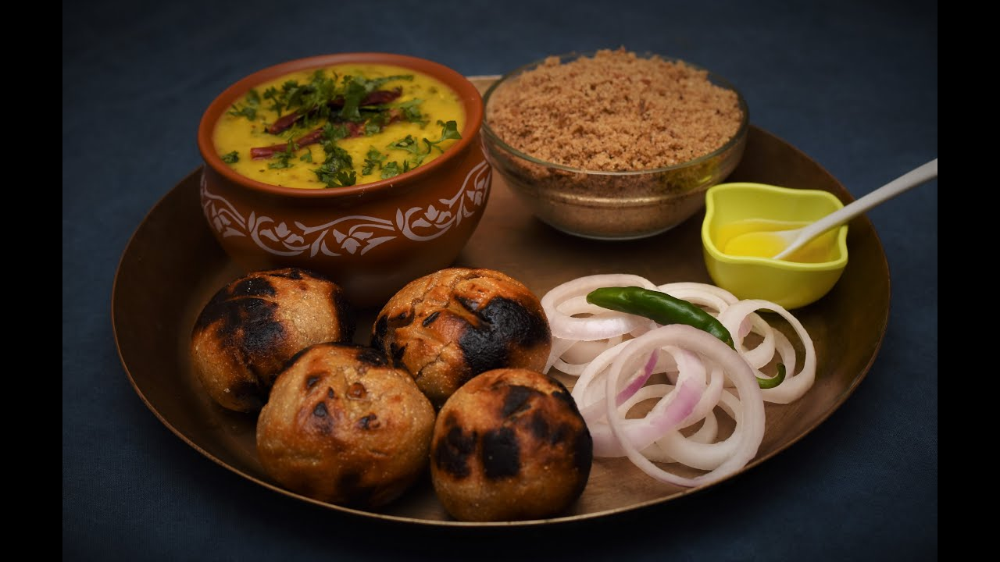

Dal Bati Churma
Discription
Dal Bati Churma is a traditional and popular dish from the Indian state of Rajasthan. It's a hearty and flavorful meal.
L&L@gmail.com

Rogan Josh
Discription
A flavorful meat dish from Kashmir, traditionally made with tender pieces of lamb or goat cooked in a rich gravy infused with aromatic spices like Kashmiri red chili, cardamom, and cloves.
L&L@gmail.com

Dhokla
Discription
A savory steamed cake made from fermented rice and chickpea flour, flavored with mustard seeds, curry leaves, and green chilies. It's a specialty of Gujarat.
L&L@gmail.com